Il tuo centro studi,
su misura.
Ogni studente ha il suo modo di imparare.
Ti aiutiamo a trovare il tuo, con un metodo, un tutor e un percorso che partono da te.
Prima consulenza gratuita · Nessun impegno
seguiti
esperienza
recensioni
Vicini, anche a distanza.
La nostra mission
Partiamo dall’ascolto.
Conosciamo le tue esigenze, le difficoltà e gli obiettivi che vuoi raggiungere.
Costruiamo il tuo percorso.
Scegliamo gli strumenti e le modalità che si adattano al tuo modo di imparare.
Ti accompagniamo.
Lezione dopo lezione, lavoriamo su comprensione, fiducia e autonomia.
Rimani aggiornato.
Anche a fine percorso, puoi richiedere materiale personalizzato per continuare a studiare e approfondire.
Divertiti!
Esplora i laboratori creativi: sperimenta, condividi idee e scopri il piacere di imparare insieme.
Parliamo del
tuo percorso.
Che tu sia uno studente, un genitore o un adulto con un nuovo obiettivo, raccontaci di cosa hai bisogno. Troviamo insieme da dove cominciare.
Prima consulenza gratuita, senza impegno.
Puoi anche chiamarci: +39 328 386 1422 · +39 329 275 6109
Oppure richiedi un preventivo per le lezioni
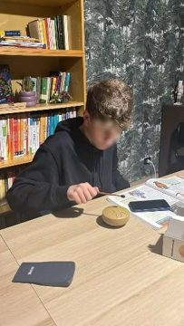

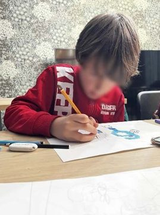

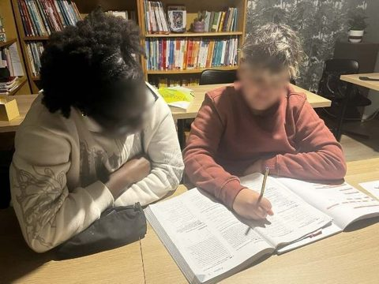

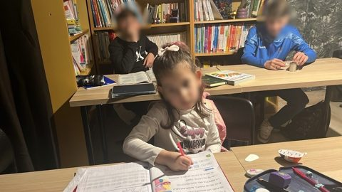

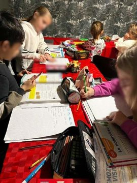

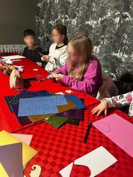

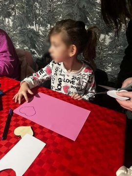

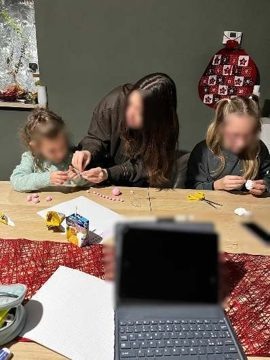

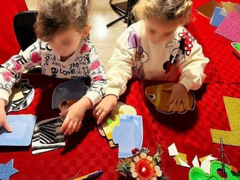

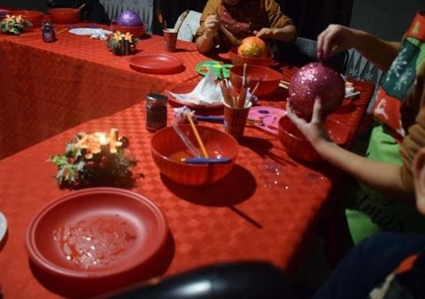

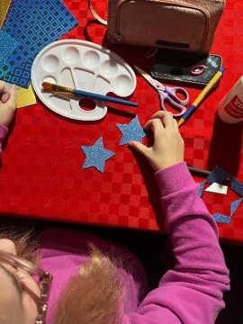

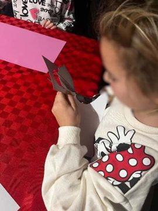

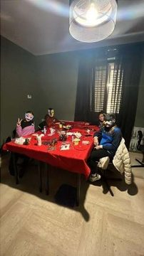

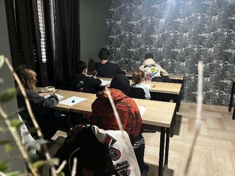

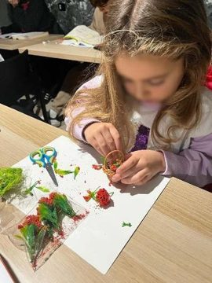

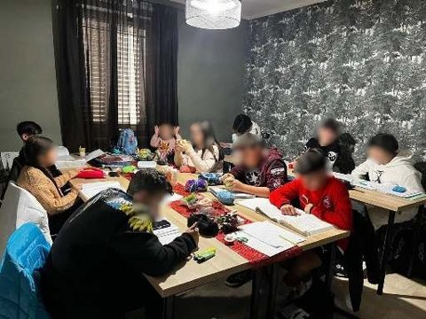

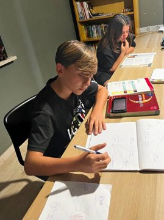

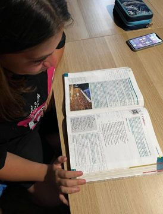

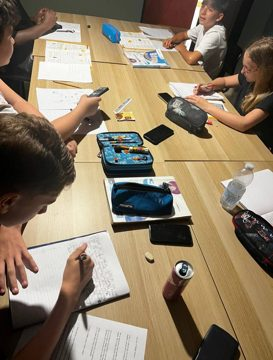

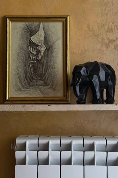

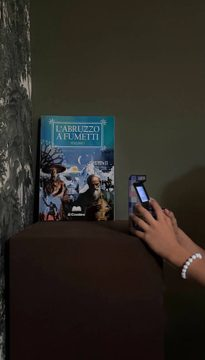

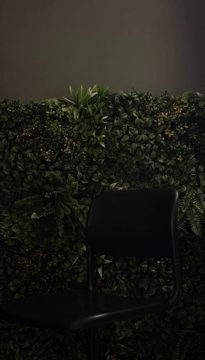

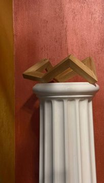

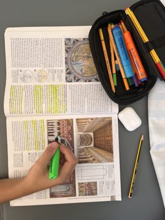

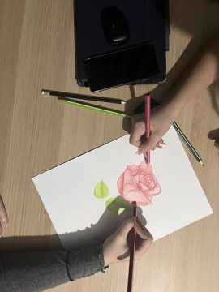

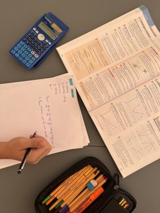

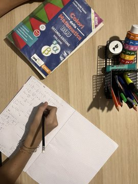

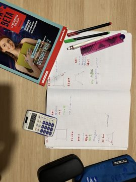

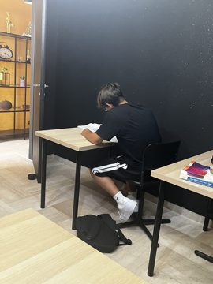

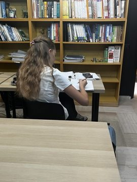
Seleziona una foto per ingrandirla.